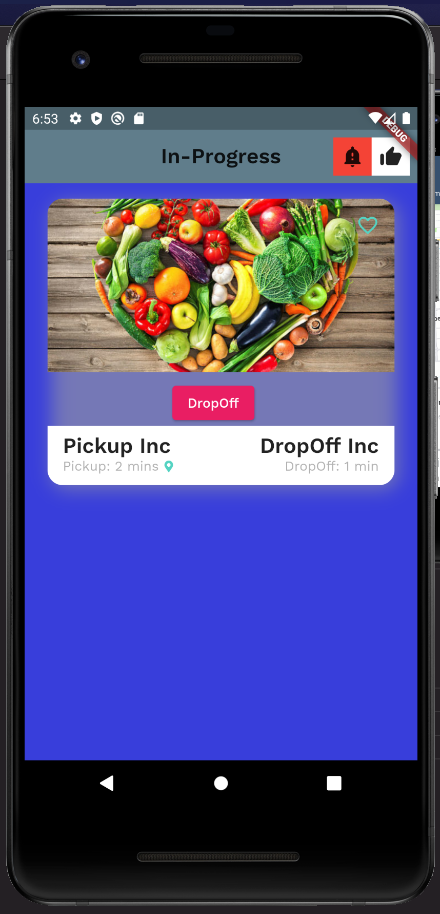

The #Jen: Network, short for Food Recovery Optimization Network, is an Uber-like Network for FoodRunners, who can volunteer to pick up food from restaurants, tech cafeterias, parties, etc that they are going to discard because it is extra. They can then deliver it to participating organizations such as churches, food pantries, etc so the people who are hungry can get a deserving hearty meal.
Pickup Organization
A Pickup Organization is typically a participating local restaurant, a tech cafetaria, etc. They typically have food that is excess and have to discard as waste. As a participant of the #Jen Network you can schedule a pick up and the closest Food Runner will stop by and pick it up. They will drop this food off to a DropOff Organization, who can then make this food available to those in need.
Food Runner
Food Runner is the person that volunteers to pickup the food from a Pickup Organization and deliver it to a DropOff Organization or the Offline Community. Based on their location, the closet Food Runner is requested to accept the pick up request.
|  | |